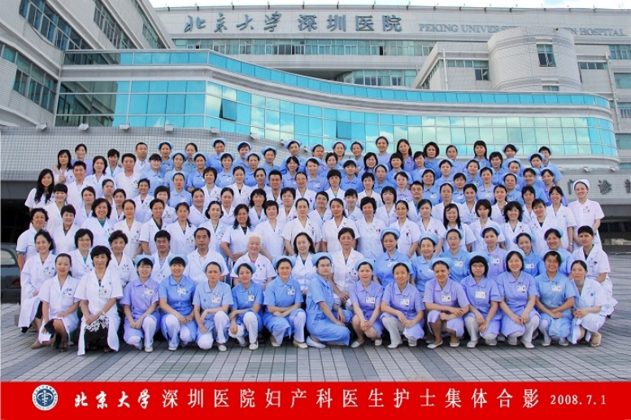

北京大学深圳医院妇产科
妇产科是北京大学深圳医院重点建设的学科之一，亦为北京大学博士与硕士研究生培养点。1999年建科，目前已成为集医疗、教学、科研、护理为一体的优质学科。全科现有医生70余人、其中博士5人, 硕士30余人，副主任医师以上专家40余人。“子宫颈癌早诊早治中心”于2005年被授予国家“子宫颈癌早诊早治示范基地”，妇科内分泌与肿瘤专业2005年被评为市级重点学科，2008年获批产前诊断技术服务资格与卫生部妇科内镜培训基地，2009年以来实施深圳万例宫颈癌筛查等多项大型国际合作项目，2010年通过广东省盆底疾病诊疗中心资质认证，2011年获批妇产科药物临床试验（GCP）资格，妇科专业评为深圳市重点学科，2012年组建深圳市女性重大疾病早期诊断技术重点实验室，2012年通过中华预防医学会复审成为国家级女性盆底功能障碍性疾病防治质量控制中心。
技术优势
妇产科下设妇科、产科和计划生育科三个亚学科。日均门诊量1200人次，设有病床101张，年收治病人9000余人次，年入院手术量7000余例，至今已为数以万计的女性患者解除了疾患的困扰。
妇科：是市级重点学科，具有先进的诊疗设备和高水平的医护人员，对于常见妇科疾病包括子宫肌瘤、子宫内膜异位症、妇科内分泌疾病、盆腔炎症、生殖道感染性疾病、女性盆底功能障碍性疾病，常见妇科肿瘤如宫颈癌、子宫内膜癌、卵巢癌及其他妇科恶性肿瘤的诊治均有着自己的特色，达到国内国际先进水平。
设宫颈病变、妇科内分泌、妇科生殖道感染、盆底疾病诊疗等特色专科门诊。妇科病房设有四十五张病床，年二级以上手术量1700余例，开展妇科肿瘤根治性手术，妇科良性疾病的开腹手术、腹腔镜宫腔镜等微创手术，及无张力吊带尿道中段悬吊手术（TVT）、阴式手术、全盆底重建术等。
产科：产科门诊开展了围产保健、产前检查、高危妊娠监测、超声诊断、优生优育咨询、细胞遗传、母乳喂养宣教等业务。病房设置有产房、爱婴区。产科每年分娩量超过4000人次，其中高危妊娠分娩占40%以上。产科技术力量雄厚，对于产科合并症、并发症如妊娠高血压疾病、妊娠期糖尿病、妊娠合并心脏疾病、妊娠期急性脂肪肝、早产、胎盘早剥、前置胎盘、DIC、HELLP综合征、羊水栓塞、产后出血的防治方面有规范的诊疗流程与丰富的救治经验。产科是深圳市南山区、光明新区及周边地区高危妊娠转诊中心。产科与儿科、新生儿病房及监护室常年密切合作，为高危新生儿监护提供了有利条件。
计划生育科：开展女性不孕症的内分泌及微创手术治疗，诊治各种计划生育疑难病症及女性节育术后并发症，开展腹腔镜输卵管成型术、显微外科输卵管吻合术、腔镜下输卵管吻合术等。不孕不育症诊治形成本专业特色，应用显微外科技术进行输卵管吻合和整形，宫腹腔镜技术诊治输卵管阻塞、子宫畸形以及复杂宫腔粘连、胚胎残留等疑难病症。国内首创重症子宫腺肌症病灶切除术，既解除患者症状又保留了生育功能，取得了满意疗效。在深圳市内率先开展诺舒阻抗子宫内膜去除术，治疗各种顽固及功能性子宫出血，具有手术时间短、恢复快、效果好、安全性能高等优点。计划生育病房与内分泌门诊紧密结合，对不孕不育及内分泌疾病手术患者进行术后随访、后续治疗及监测排卵等，达到了良好的整体治疗效果。
Photo Credit: Unsplash